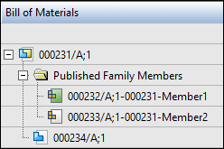

Family of Assemblies in Structure Editor
The development of some products requires you to define multiple variations of a single assembly. In Solid Edge, these are referred to as Alternate Assemblies that are specified as either:
-
Alternate Position Assemblies, where all parts are identical, but some part positions change during the physical operation of the assembly.
-
Family of Assemblies (FOA), where most parts are identical, but some parts and subassemblies are different between the individual assemblies.
You create a family of assemblies in Solid Edge when you convert a normal assembly document into an alternate assemblies document and then specify it as a family of assemblies. The original assembly document is considered the source and the variations are referred to as the members.
Family of assembly members are uniquely identified in Teamcenter when they are published. Publishing the members creates individual items in Teamcenter that are identified by a unique Item ID, Revision and name. You can choose to select all members or specific members to be published using the steps defined in Publish family of assembly members to Teamcenter.
When family of assemblies are published to Teamcenter in Solid Edge and then viewed in Structure Editor, the FOA source is displayed as the top node with its members underneath in the Published Family Members folder.

The green shaded icon in the Bill of Materials column identifies the active FOA member.
Published family members are read-only and cannot be assigned an action. However, they can be impacted when you choose to set the action on the source to Revise or Save As.
Revising the Family of Assemblies Source in Structure Editor
Setting the action on the family of assemblies source to Revise automatically revises the published family members. The Revision column on the right side of the Structure Editor window displays the new revision.
Using Save-As with Family of Assemblies in Structure Editor
When you set the action on the family of assembly source to Save As:
-
Published family members are not carried forward with the source.
-
You must publish family of assembly members to a new Item ID in Teamcenter.
To learn more, see Using Family of Assemblies in the Teamcenter-managed environment.
For additional information on using alternate assemblies in Solid Edge, see Alternate Assemblies.